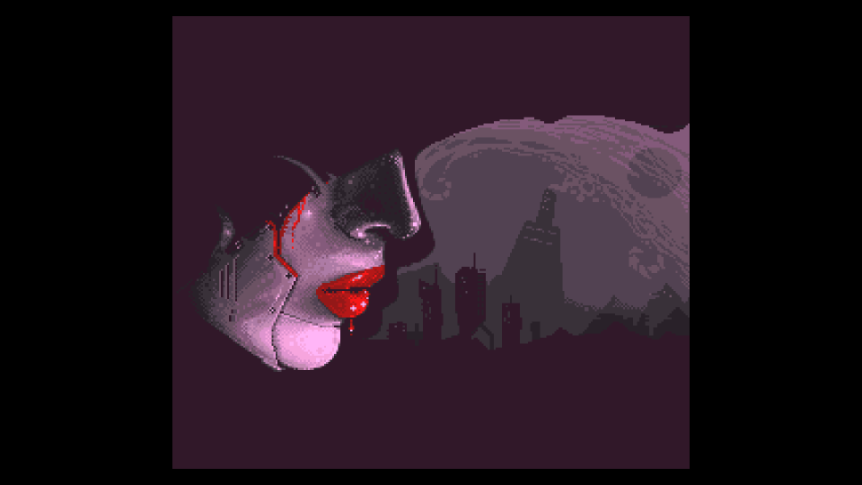
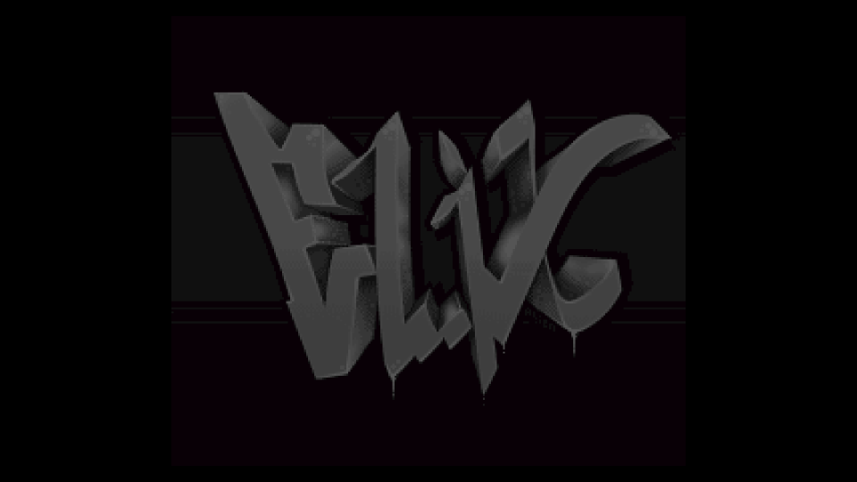
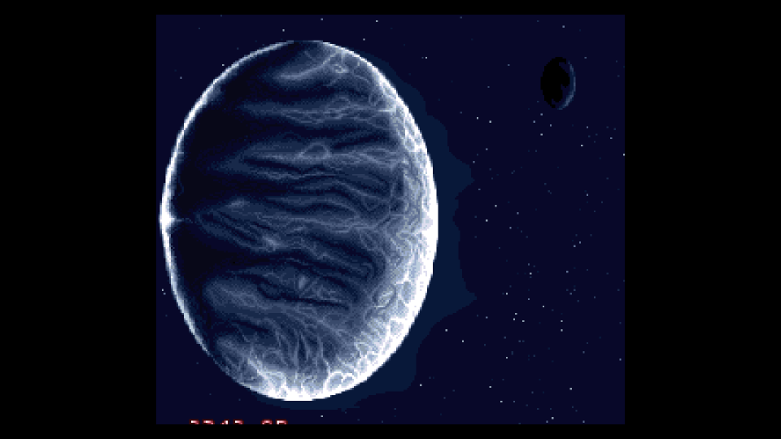
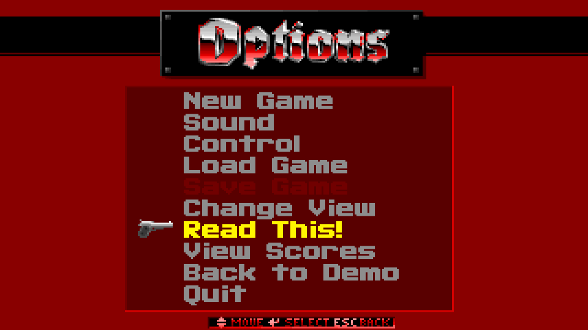
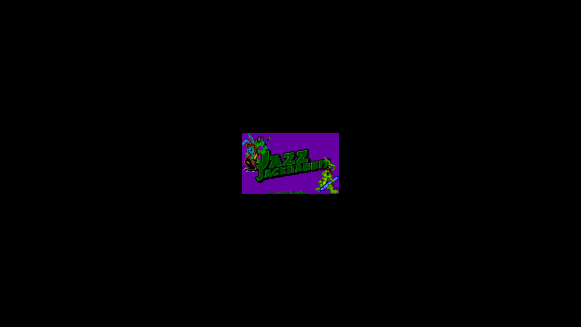
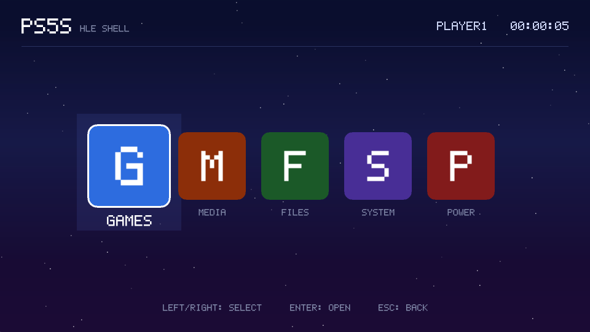
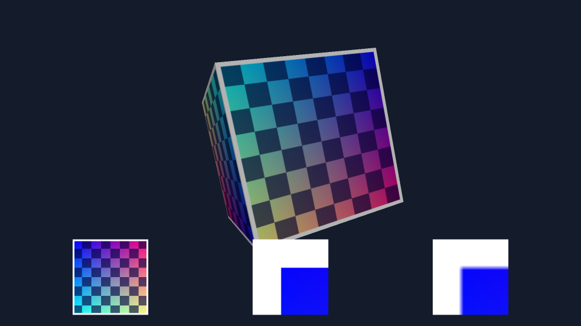
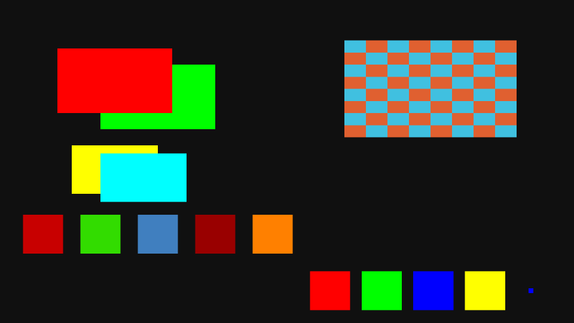
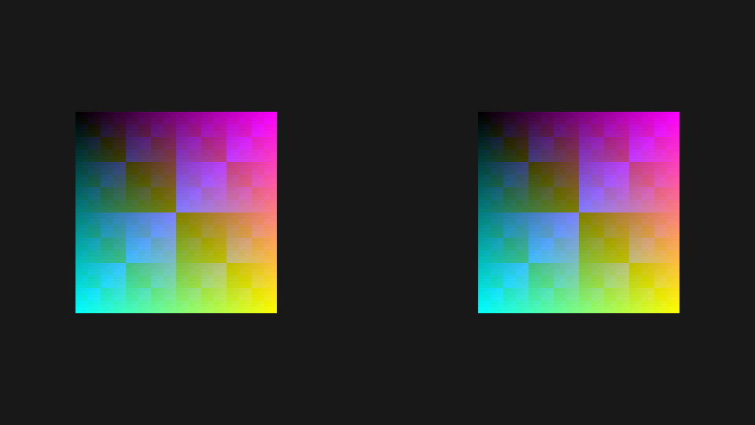
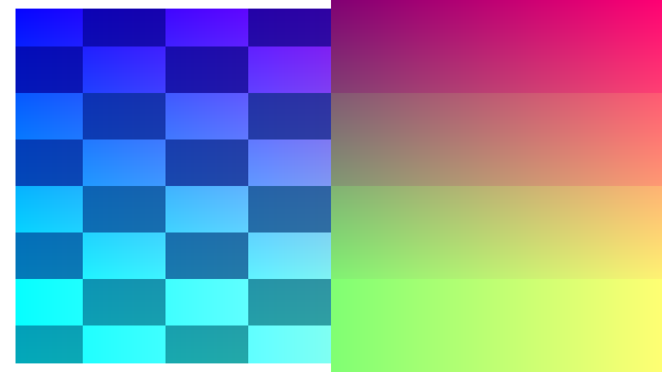

A PlayStation 5 emulator for Windows, built from scratch by reverse engineering. It already runs open-source PS5 homebrew with picture, sound and controller input.

These are unmodified release builds of open-source homebrew made for real PS5 consoles. PS5S loads them, links them against its own system libraries and runs them, with no console and no Sony software involved.





Listen: 15 seconds of The Final Insect's music, captured exactly as PS5S played it through its emulated audio output (48 kHz stereo).
Test programs run real AMD RDNA2 GPU machine code. PS5S translates it to Vulkan and checks the pixels against exact expected values.




What PS5S can and cannot do today.
| Software | Status | Notes |
|---|---|---|
| PS5S test programs and system shell | Runs | 10 of 10 self-test suites pass |
| Open-source PS5 homebrew (SDL2) | Runs | LakeSnes, Wolf4SDL, OpenJazz: every system call they use is implemented |
| Other homebrew | Partly | Missing functions are reported by name |
| Commercial PS5 games | Not yet | Needs the PS5 graphics driver interface, compute shaders, ray tracing and many more system libraries |
The PS5 has an x86-64 CPU, so program code runs natively. PS5S emulates everything around it.
Loads PS5 programs and system modules, resolves imports through hashed symbol IDs (NIDs), handles thread-local storage, and patches FS-segment accesses that Windows cannot run.
467 functions: kernel, threads, memory, files, POSIX, C library, audio, save data, video output, controller, user and system services.
Executes AMD PM4 command buffers on a GPU thread: register state, DMA, fences, interrupts and draws.
Decodes RDNA2 machine code (opcode tables recovered by probing a disassembler) and translates it, including branches, loops and EXEC masks, to Vulkan shaders.
XOR address equations convert the GPU's swizzled memory layouts, including the PS5 display's tiled scan-out format, to and from linear.
Every GPU register, bit field, enum and texture format used is checked against AMD's published RDNA2 register database: 161 of 161 match.
> ps5s.exe --arg "/app0/roms/Smash It (elix 2014).sfc" lakesnes.elf [Boot ] [1/5] HLE kernel online: 467 exports in 12 libraries [Loader ] lakesnes.elf is a PS5 payload SDK program: PS5S links it and calls main() directly [Loader ] Linked lakesnes.elf: 228 imports (228 HLE, 0 LLE, 0 stubbed) [VideoOut ] Registered 2 buffer(s) at index 0: 1920x1080 pitch 0 fmt 0x22000000 tiling 0 [Audio ] Opened port 1: 48000 Hz, 2048 samples/grain, 2 channel(s) s16 [Guest ] LakeSnes - Running with SDL 2.30.12 [Guest ] Loaded LoROM rom (PAL) [Guest ] "ELIX 2014 - SMASH IT"
Unedited emulator output from the runs shown on this page (local folder paths shortened).
ALL TESTS PASSED hello: linking, modules, thread-local storage ALL GPU TESTS PASSED gputest: PM4 command buffers, fences, interrupts ALL RENDER TESTS PASSED cube: translated RDNA2 shaders on Vulkan ALL CONTROL-FLOW TESTS PASSED branchtest: GPU branches and loops ALL RENDER FEATURE TESTS PASSED rendertest: depth, MRT, formats, mipmaps ALL DE-TILING TESTS PASSED tiletest: swizzled textures and targets ALL SWIZZLE TESTS PASSED tiling equation solver ALL LIBC/KERNEL TESTS PASSED libctest: printf ABI, qsort, events, file I/O ALL AUDIO TESTS PASSED audiotest: real-time audio output ALL SAVE DATA TESTS PASSED savetest: persistent save data 161/161 checks match AMD's RDNA2 register database